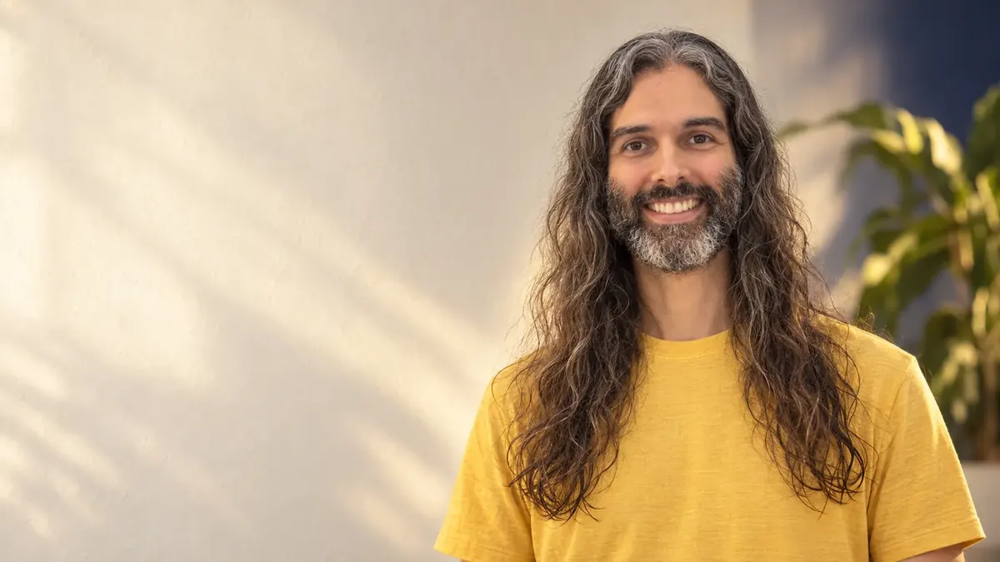
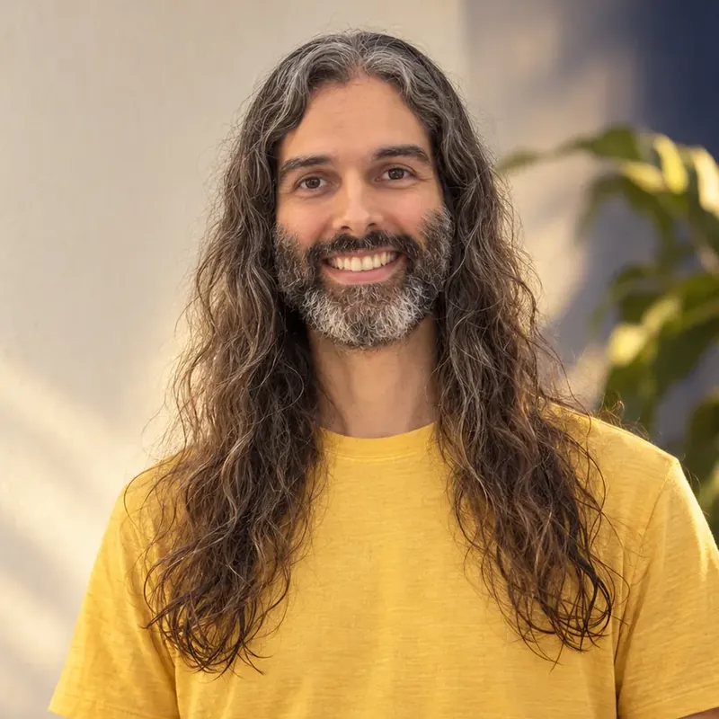

Harmonização Humana
Uma experiência de leitura e transformação para revelar o que precisa ser visto e trabalhar o que precisa mudar.
Filipe Morgadoharmonizacaohumana.com.br
Para quem é
Você não precisa contar sua história, explicar o que está acontecendo ou chegar com uma questão definida.
A leitura começa sem informações prévias, e isso faz parte do método: sem uma história contada antes, o que aparece chega mais livre de interpretação. É o próprio processo que revela aquilo que precisa ser percebido, inclusive coisas que você ainda não conseguia enxergar por conta própria.
A leitura conduz. Você só precisa estar presente.
Como funciona
O processo acessa o campo, e aquilo que precisa aparecer começa a se revelar. Podem surgir sensações, emoções, imagens, símbolos, palavras, padrões, memórias ou orientações.
O que apareceu é traduzido e compartilhado com você, de forma simples e compreensível.
A leitura aprofunda até o ponto relevante e traz direção sobre aquilo que se revelou.
Aquilo que precisa ser trabalhado é trabalhado energeticamente, ainda durante o processo.
Não existe um roteiro fechado. Cada leitura encontra o próprio caminho.
Entender não basta
Muitas vezes, entender não basta. O que prende costuma estar mais fundo do que a compreensão alcança.
Por isso aquilo que emerge é trabalhado energeticamente durante o próprio processo, buscando dissolver, transmutar, reorganizar e reprogramar o que precisa ser transformado. Para que você recupere a liberdade de escolher diferente.
Não é uma leitura e depois um tratamento. A transformação acontece dentro da leitura.
Durante o processo podem surgir diferentes formas de percepção e trabalho: aspectos intuitivos, energéticos e simbólicos, conteúdos relacionados aos Registros Akáshicos, orientações e outras informações relevantes para aquele momento.
Nada é escolhido antes. Nem por você, nem por mim. Os recursos se combinam dentro da própria leitura, conforme o que o processo revela.
Você não precisa conhecer nenhuma dessas práticas. Precisa apenas se abrir para a experiência.
Formatos
Até 5 minutos · em áudio
Uma mensagem curta, enviada em áudio. Você não precisa marcar horário nem estar presente. Envia seu nome completo e sua data de nascimento, e eu devolvo o que aparecer para você naquele momento.
É para quando você busca uma luz, uma orientação, uma resposta. Entrega em geral em um ou dois dias úteis.
A Mensagem aponta. A sessão trabalha. São experiências e profundidades diferentes.
Cerca de 1 hora · videochamada
Uma leitura completa para o seu momento. Você pode viver a experiência de forma independente, sem compromisso de continuidade. Não precisa preparar nada, não precisa chegar com um problema definido, não precisa contar sua história.
Nos primeiros minutos eu explico como vai ser. Depois a leitura flui: eu traduzo em voz alta o que aparece, e você recebe. Quando possível, abro espaço para uma pergunta. Já no primeiro encontro pode começar a surgir clareza sobre o que está acontecendo, durante ou depois da sessão.
Recomendada · 10 sessões · 1 por semana
Para quem quer mudar profundamente. Dez sessões de aproximadamente uma hora, uma por semana. É a forma recomendada para quem deseja aprofundar o processo, permitindo que o trabalho se desenvolva ao longo do tempo e que diferentes camadas sejam acessadas e trabalhadas progressivamente.
Os horários são limitados: cada jornada ocupa o mesmo horário durante dez semanas.
A Jornada · 10 semanas
O trabalho se desenvolve ao longo do tempo: diferentes camadas são acessadas e trabalhadas, progressivamente.
O processo começa de forma aberta, sem que você precise trazer um tema. Essas sessões permitem uma organização mais ampla, deixando que o próprio processo revele o que precisa ser trabalhado.
A partir daí, caso faça sentido, você pode trazer um tema amplo para aprofundamento: relacionamentos, trabalho, família, prosperidade, autoestima ou outro aspecto importante da sua vida.
Você pode trazer um tema. Não precisa trazer uma história. Não é necessário narrar o que aconteceu, explicar o contexto ou detalhar a situação. Basta indicar o território. O processo conduz o restante.
A Jornada existe para a transformação acontecer. Soltar o que prende e abrir espaço para uma nova versão de você. Cada processo é único e o resultado só se conhece percorrendo o caminho.
Quem conduz

Meu nome é Filipe Morgado.
Alguém que busca escutar antes de interferir, perceber antes de interpretar e compreender antes de agir. Meu trabalho é ajudar a restaurar a harmonia quando algo deixou de fluir.
Minha trajetória passou pela engenharia e pela computação. Depois pela fotografia, que foi o que me fez olhar para mim mesmo e abriu o caminho. Vieram os passeios e as viagens fotográficas, e com eles uma forma diferente de perceber. Foi por aí que a espiritualidade chegou, e depois o trabalho terapêutico.
Não vejo essas coisas como fases separadas. Racionalidade e intuição, estrutura e sensibilidade, tecnologia e espiritualidade: para mim são partes da mesma Humanidade.
Talvez por isso eu não me encaixe perfeitamente na bolha espiritual, nem em nenhuma outra. E talvez seja exatamente isso que permite que este trabalho aconteça de forma simples, humana e sem espetáculo.
Meu trabalho não está preso a uma técnica. Cada pessoa apresenta um campo diferente, e o processo conduz aquilo que precisa ser visto e trabalhado. A ferramenta mais adequada surge dentro do processo, não antes dele.
Depoimentos
“…ao longo dessas semanas, eu tenho sentido mudanças emocionais, até físicas, e percebendo no dia a dia da minha vida como muita coisa vem fluindo…”Priscila Mattos
“…ele me direcionou para um ponto que eu estava desejando demais desenvolver, mas inconscientemente eu estava rejeitando. Isso para mim foi muito disruptivo.”Alessandra Medeiros
“…fiquei surpreendida pela postura, em como o Filipe conduziu as sessões e pela precisão das orientações/leituras realizadas.”Geruza Cristina
Ao vivo no YouTube · quintas, 19h
Toda quinta, às 19h, eu faço leituras ao vivo no YouTube. É aberto, de graça, sem compromisso e sem precisar entender nada antes. Quer receber uma? É só escrever no chat.
Vamos conversar
Você pode começar por uma Mensagem, por uma sessão, ou simplesmente conversando comigo sobre a Jornada.
Este trabalho não substitui acompanhamento médico, psicológico ou psiquiátrico, nem outros cuidados profissionais de saúde. Não são feitas promessas de cura ou garantia de resultados.